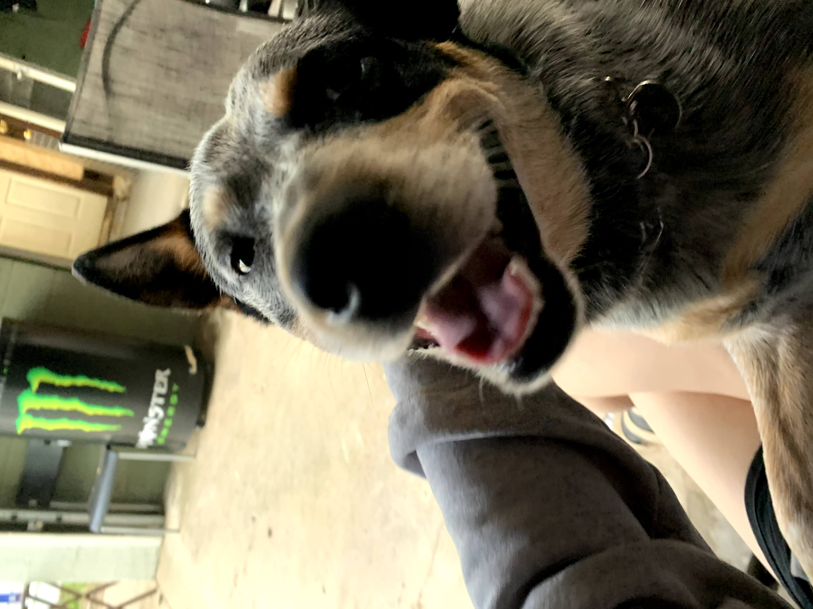
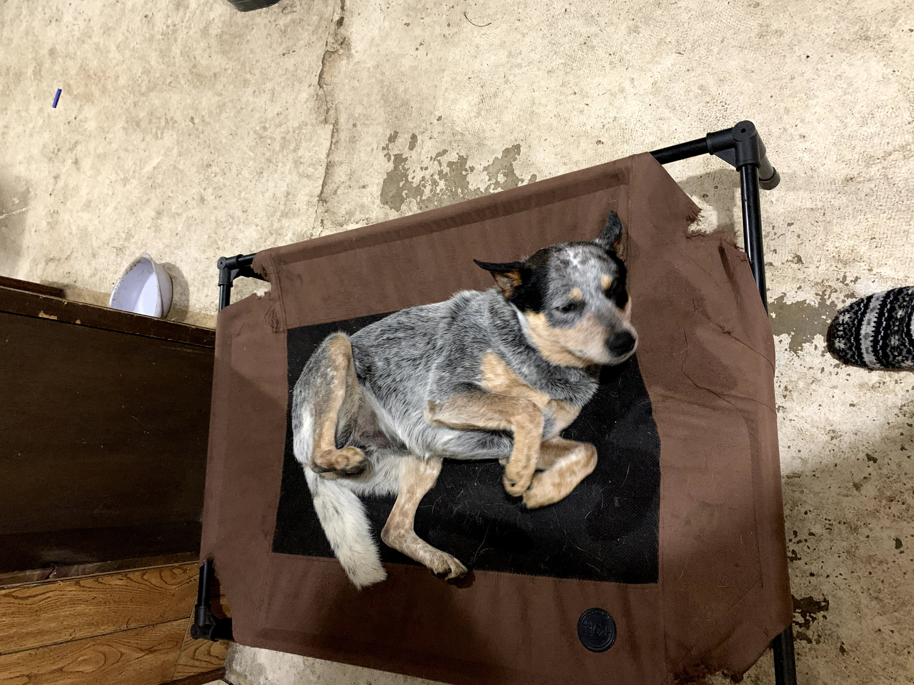
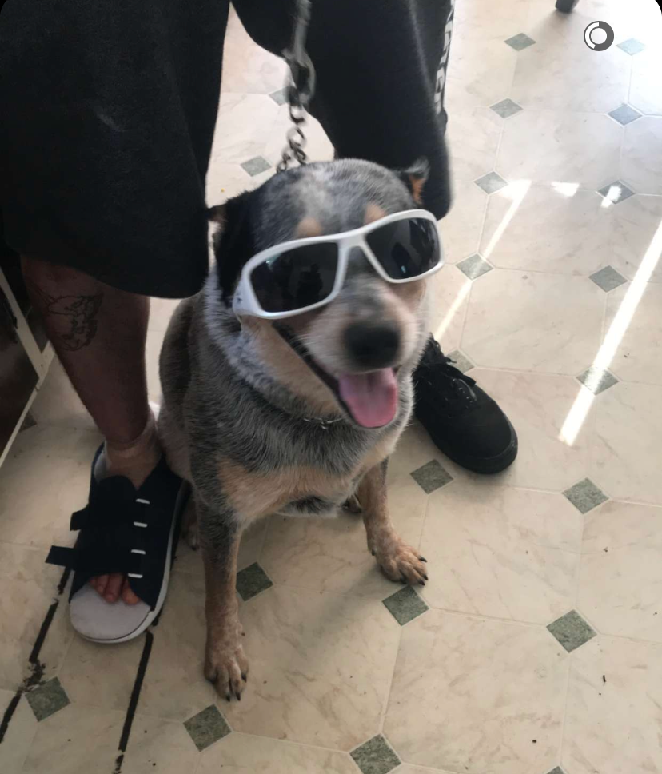
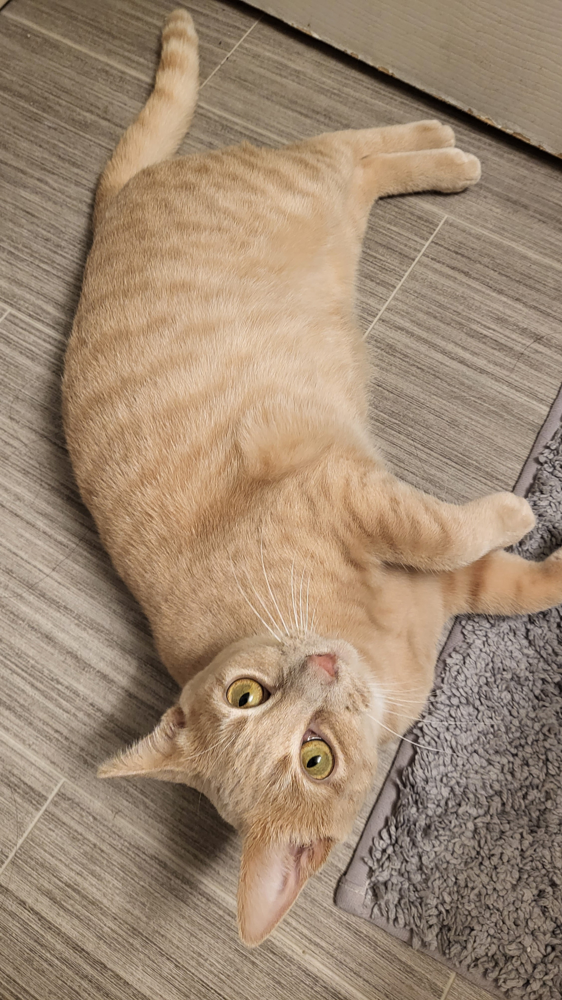
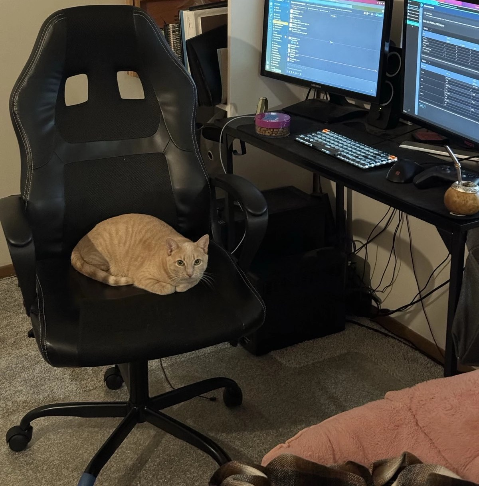
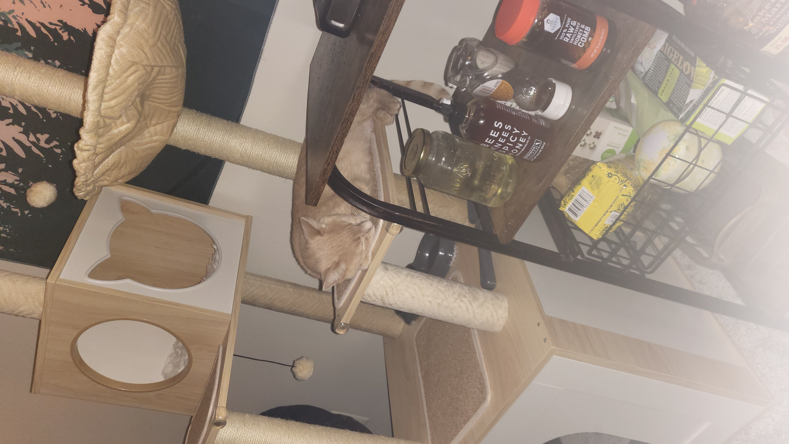
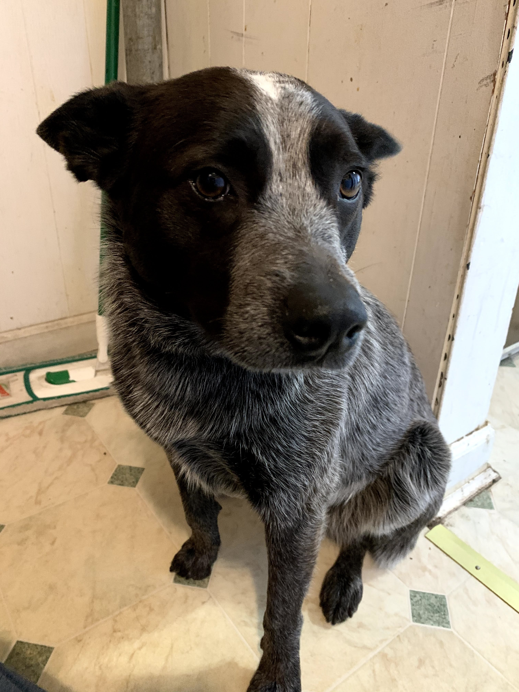
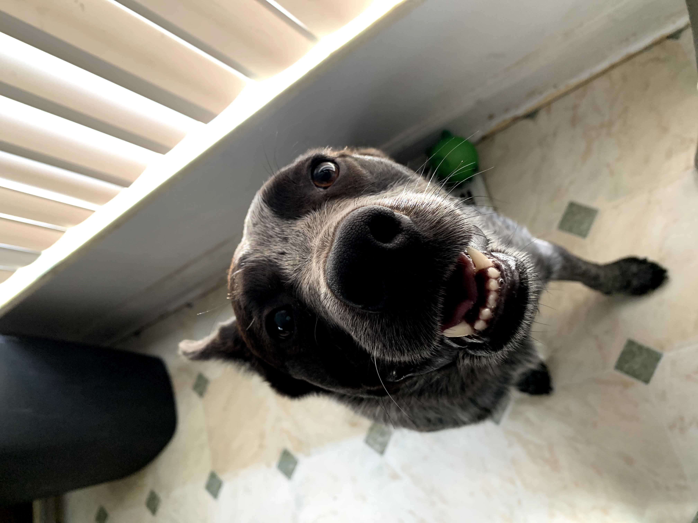
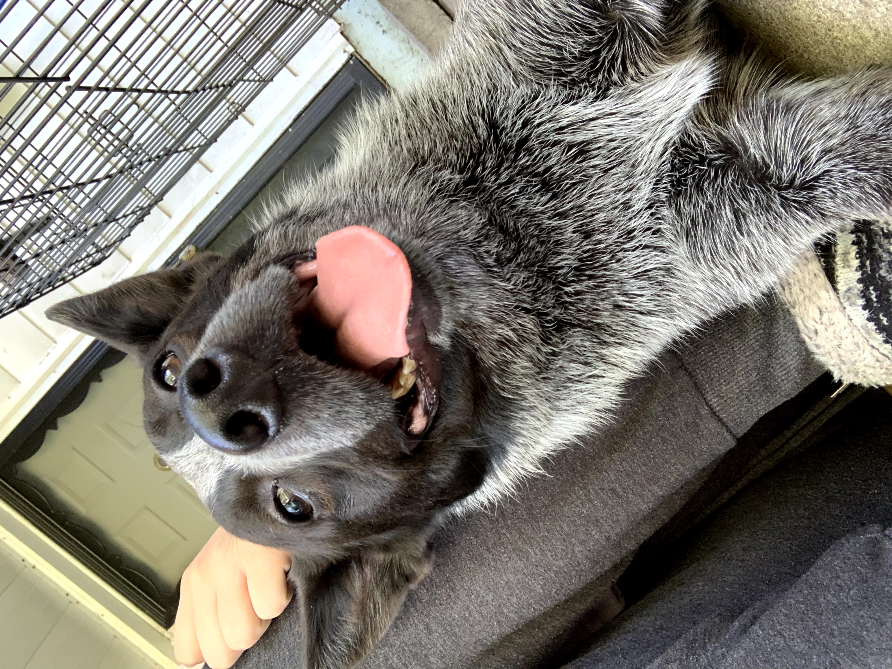

Pets
Odie

Odie is a very loyal Blue Heeler breed dog. He spent his early years in a shelter until he was chosen by a lucky family (my family). He takes his job as house guard dog very seriously and is not afraid to protect his loved ones, even if it is from the scary mailman. He is fast and loud and has enough energy in him to power entire neighborhoods.
But under that loud bark, he is a loving and affectionate dog. Often, you can find Odie laying on the ground with his belly up expecting scratches and pets. When he isn’t getting pets, Odie enjoys running around in his big backyard and playing catch with his many toys (he is spoiled).
Photo Gallery
  Likes
- Belly scratches
- Barking
- Playing fetch
Honeybun
Honeybun began her early life as a momma on the streets until she was rescued by the Humane Society. Now she is a spoiled baby who will wake you up in bed if she is not fed on time!
When she is not eating her 3 meals a day, and demanding more, she is a very playful kitty. When her zoomies are activated she runs close to the speed of light! Sadly, she lives in constant fear of her own tail and is on a lifelong mission to catch it. One day she’ll get it…
Photo Gallery
 Likes
- Loafing
- Chasing her own tail
- Demanding food
Afaya
Afaya is Odie's older sister who knows how to give him a hard time. She will bark at just about anything and always makes sure her brother is barking with her.
Under that tough bark, she is a sweet sweet girl who loves getting booty pats. She loves to eat, but don't mistake her fluff for fat!
Photo Gallery
 Likes
- Eating
- Booty pats
- Barking
Bacon Q Dog

Bacon Q. Dog is a 9yr old labradoodle. He prefers to spend his days lounging among the three different beds/couches that his family has gifted him. He enjoys a walk or two around the neighborhood, as long as he can pretend that he doesn't see any of the other animals to avoid the embarrassment of not wanting to admit he has no wolf-like skills in chasing them.
At night just as the rest of the family is ready to relax, Bacon suddenly wants to release all of his energy. He will place his toys on a mini couch and frantically drag the couch around, giving his toys "a ride." There is also a lot of rolling. Lots and lots of rolling.
Photo Gallery


Likes
- Belly rubs
- Playing tug-of-war
- Sneaking onto the couch
Fitz

Loves chasings tennis balls, chipmunks, squirrels, and birds. Often found sitting by the fire in wintertime, and in sun patches when available. He’s energetic, mischievous, and easily bored. He loves people and gets grumpy if left without a lap too long.
Loves barking up trees, running around on the lawn, and digging in the dirt looking for moles. He especially likes getting treats and whines when he comes inside and doesn’t get a snack.
Photo Gallery


Likes
- Blankets
- Being warm
- Barking